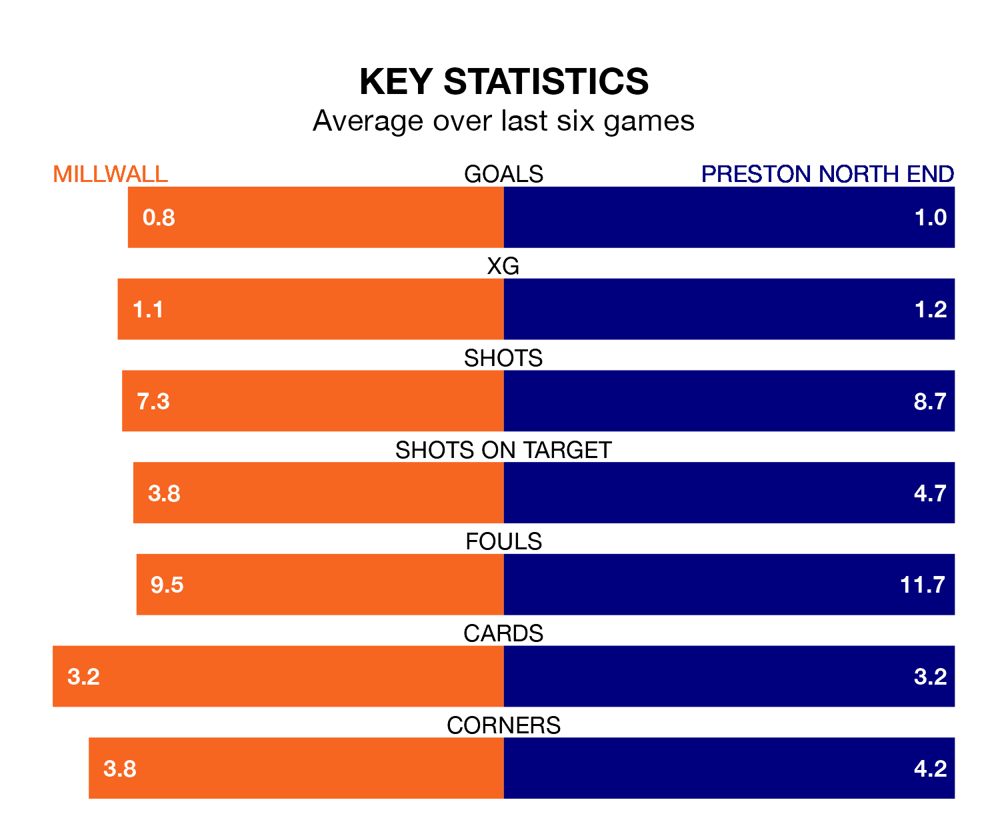

Preston North End travel to Millwall on Saturday in EFL Championship.
The visitors come into the game on the back of a defeat in their last match, having lost to Leeds United 2-1 away, with a goal from Will Keane.
The Lions also lost their last match, 2-0 against Queens Park Rangers.
In the last 10 years, Millwall and Preston have played each other on 13 occasions. Millwall won six of them, Preston two, and they drew five times.
On average, the Lions scored 1.4 goals and the Lilywhites 0.9 in those matches.
Their last meeting was on October 21, when they played out a 1-1 draw.
Millwall are 19th in the table after 28 games, of which they have won eight and drawn eight, earning 32 points.
Preston are seven places ahead of the Lions in 12th, with 11 wins and five draws putting them on 38 points.
The home side are in mixed form in EFL Championship, with three wins and a draw from their last six games.
With two wins and four losses over that period, North End's form is worse – they have taken six points from 18, compared to Millwall's 10.
With 29 goals in 28 games so far this season, Millwall are scoring at below the league average rate with 1.0 goals per game. But they are conceding fewer than average too, letting in 36 goals at a rate of 1.3 per game.
The Lilywhites are also below average scorers, with 1.2 goals per game, compared to a league average of 1.4. They have conceded 1.6 goals per game.
Updated: 09:18 (UTC), 23/01/24